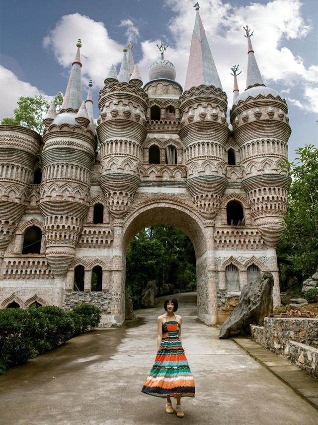

市抗洪救灾工作先进集体
沙坪坝区
处在重庆市西南部，东滨嘉陵江， 西抵缙云山，是重庆市科教
文化区，重庆大学城位于沙坪坝区西部，融巴渝文化、沙磁文化、抗
战文化、红岩文化于一炉，是红岩精神的重要发祥地。
技术产业开发区和北部新区。截止到2013年，沙坪坝区辖17个街道
、7个镇，面积396.2平方公里。2012年末，沙坪坝区常住人108.07
万人。
| 磁器口古镇，千年古镇，重庆缩影，位于重庆市沙坪坝区嘉陵江畔的古镇磁器口，辖区1.8万人，面积1.5平方公里。磁器口古镇是位于重庆市区，行政区划隶属沙坪坝区，古镇磁器口位于市区近郊，东临嘉陵江，南接沙坪坝，西界童家桥，北靠石井坡。 | |
|  | 海石公园如今已是重庆人周末散心或野餐，平时散步的好去处。随处可见的石头没准哪一个就来自远古几亿年前。海石公园独特的喀什特地貌使其拥有了千姿百态、惟妙惟肖的海花石。天然石林经过岁月的风吹雨打，呈浅灰色，畅游其间，让人不由赞叹岁月的鬼斧神工！而融合着中西文化的欧式古典城堡，其天然石灰岩式的装饰风格渗透到建筑内外的每一个角落 |
| 虎峰山生态旅游区位于沙坪坝区曾家镇虎峰山村，是重庆莲花湖旅游度假区的重要组成部分，总面积7.31平方公里，海拔300－680米。虎峰山属缙云山脉，是亚热带常绿阔叶林区，景区内森林茂密、植被丰富、林相整齐，水源涵养良好，空气清新宜人，古树、古道、湖泊、庙宇点缀其中，素有“重庆小九寨”美誉。目前，虎峰山登山步道 |